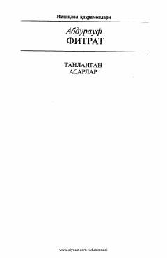

AFAbdurauf Fitratning ilmiy-pedagogik merosi va tadqiqotlari jamlangan to'plamning to'rtinchi jildi.
Ushbu to'plam jadidchilik harakatining yirik namoyandasi Abdurauf Fitratning ilmiy merosiga bag'ishlangan. To'rtinchi jilddan muallifning darsliklari, o'quv qo'llanmalari hamda turli ilmiy maqola va tadqiqotlari o'rin olgan.